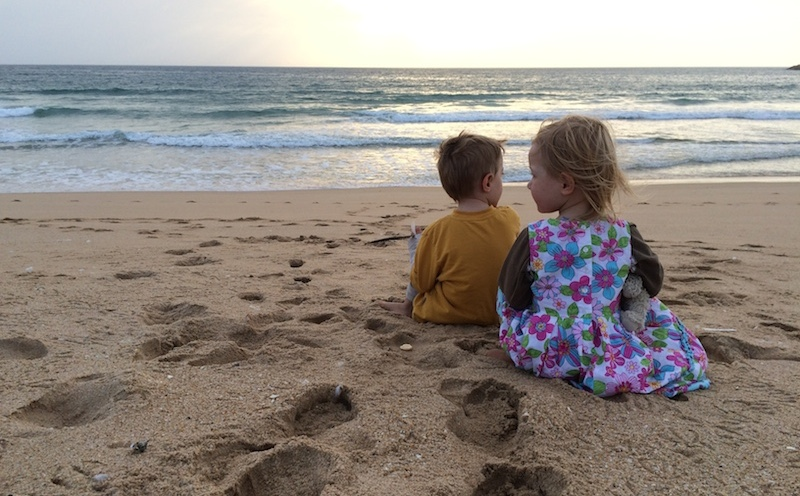

Wir sind eine 4-koepfige Familie aus Oberbayern, die es nach einer Zeit in der Grossstadt wieder naeher zu den Bergen zieht.
Unsere 2 Kinder sind gerade 3 geworden und schon jetzt am liebsten mit uns in den Bergen unterwegs. ...und natuerlich im Sand am Meer!
